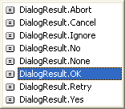
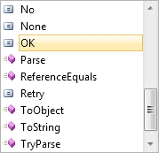

Modal and Non Modal Forms
This lesson follows on from the previous short lesson: How to create a second form
A modal from is one that has to be dealt with before a user can continue. An example is the Change Case dialogue box in Microsoft Word. If you try to click away from the dialogue box, you'll here a beep to indicate an error. Until you click either the Cancel or OK buttons, the programme won't let you click anywhere else.
The second form you've just created is called a Modeless form. These are forms than can be hidden or sent to the taskbar. You can then return to the main form or programme and do things with it.
A Modal form is sometimes called a dialogue box. And we'll see how to create one of these now.
Add a second button to your Form1. Change the Name property of the new button to btnDialogueBox. Double click the new button and add the following code:
Dim frmDialogue As New frmSecond
frmDialogue.ShowDialog()
To display a form as a Modal dialogue box, you use the ShowDialog method. If you use the Show method, the form is displayed as a Modeless form.
Run your programme. Click your new button, and the second form should display. Move it out the way and try to click a button on Form1. You won't be able to. The second form has to be dealt with before you can access Form1.
When the form is a Modal dialogue box, you can create OK and Cancel buttons for it. VB.NET then has a trick up its sleeve for these types of buttons. We'll see that trick now.
OK and Cancel Buttons
In the design environment, Click the Tab for your frmSecond. When the form is displayed in the design window, add two buttons to it (Make sure you're adding the buttons to the second form and NOT Form1). Change the Name property of the first button to btnOK, and the Name property of the second to btnCancel. Double click your OK button and add the following code to it:
Me.DialogResult = DialogResult.OK
The Me keyword refers to the current form. When you type a full stop, select DialogResult from the pop up list that appears. DialogResult is a property of the Form. It can accept a range of values. As soon as you type a space after the equals sign, you'll see a list with these values on it (VB NET 2008 only. In VB 2010, you have to type the DialogResult):

As you can see, in VB NET 2008, one of these values is DialogResult.OK. This indicates that you want to use this button as an OK button. When the button is clicked, VB.NET will return a result of OK for this button.
In VB NET 2010, type DialogResult after the equals sign. Type a dot and you'll have this instead of the above image:

Access the code for your Cancel button and add the following line:
Me.DialogResult = DialogResult.Cancel
For the Cancel button, we're just selecting DialogResult.Cancel from the list. When the button is clicked, VB.NET will return a result of Cancel for this button.
You can test to see what value is stored in Me.DialogResult. But you do that from the button that displays the form, Form1 for us.
So access your Form1 code, and locate the lines that display the second form. The two lines should be these:
Dim frmDialogue As New frmSecond
frmDialogue.ShowDialog()
Change the second line to this:
If frmDialogue.ShowDialog() = DialogResult.OK Then
MsgBox("OK Button Clicked")
End If
To get at the value of the button clicked, you test to see what result the ShowDialog property is. If the ShowDialog property of frmDialogue is OK then you can execute the code that needs executing. If the Cancel button was clicked, however, you don't have to do anything: VB.NET will take of closing your Modal dialogue box for you!
Run your programme and test it out. Click your button to bring up your Modal dialogue box. Click the OK button, and you should see the message box display. Bring the Modal dialogue box up a second time and then click the Cancel button. The form will just close down.
In the next part, we'll see how to return values from a second form.